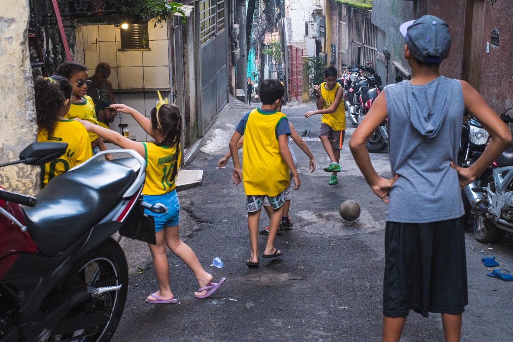
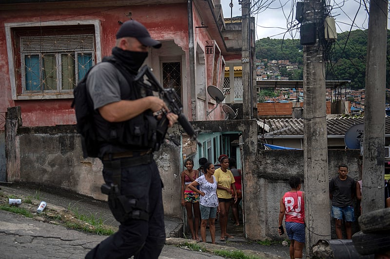

Vivência em favelas

A vida nas favelas combina dificuldades, como moradias precárias, falta de acesso a serviços básicos e violência, frequentemente relacionada ao tráfico. No entanto, também é um espaço de solidariedade, criatividade e resistência, onde comunidades se fortalecem por meio de redes de apoio e iniciativas culturais, como música, dança e esportes. Esses elementos oferecem um senso de pertencimento e esperança, ajudando os moradores a se verem como protagonistas de suas próprias histórias e a buscar soluções coletivas para enfrentar os desafios. Apesar da desigualdade e das adversidades, as favelas continuam sendo espaços de luta, resiliência e transformação. A busca constante por dignidade e direitos é um motor para a mobilização social e o empoderamento local.
Tráfico


O tráfico de drogas nas favelas brasileiras é um fenômeno complexo, ligado às desigualdades sociais, econômicas e políticas do país. Nas periferias urbanas, onde predominam o desemprego e a falta de acesso a serviços básicos, o tráfico muitas vezes se apresenta como uma alternativa econômica. Ele funciona como um "poder paralelo", substituindo o Estado em várias áreas, oferecendo poder e status, especialmente aos jovens. A presença de tráfico é uma das principais causas das frequentes operações policiais, muitas vezes violentas e marcadas por abusos de direitos humanos, o que aumenta a desconfiança entre a comunidade e a polícia. A solução para esse problema depende de mudanças profundas nas condições de vida dessas populações.